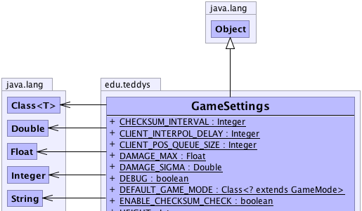
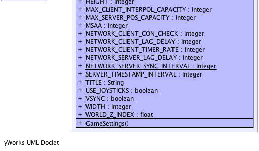

edu.teddys.GameSettings
edu.teddys.GameSettings
|
||||||||||
| PREV CLASS NEXT CLASS | FRAMES NO FRAMES | |||||||||
| SUMMARY: NESTED | FIELD | CONSTR | METHOD | DETAIL: FIELD | CONSTR | METHOD | |||||||||
java.lang.Object
public class GameSettings
Provides default settings of the application.
|  |
|  |
| Field Summary | |
|---|---|
static java.lang.Integer |
CHECKSUM_INTERVAL
Checksum interval in milliseconds (Default: 3000 ms) |
static java.lang.Integer |
CLIENT_INTERPOL_DELAY
The interpolation delay (in ms) is necessary for the lag compensation, such as interpolating position changes or time-related calculation of triggered events etc. |
static java.lang.Integer |
CLIENT_POS_QUEUE_SIZE
The number of rates to shift the user back in time. |
static java.lang.Float |
DAMAGE_MAX
The maximum damage which is taken as the base value for the calculation of the damage. |
static java.lang.Double |
DAMAGE_SIGMA
Defined the sigma value for the damage calculation. |
static boolean |
DEBUG
Shows the meshed of the bounding boxes and increases the verbosity of logs. |
static java.lang.Class<? extends GameMode> |
DEFAULT_GAME_MODE
Default game mode. |
static boolean |
ENABLE_CHECKSUM_CHECK
Enable checks of randomly chosen game files. |
static java.lang.Integer |
HEIGHT
Resolution Height |
static java.lang.Integer |
MAX_CLIENT_INTERPOL_CAPACITY
The maximum number of client positions for the interpolation of movements. |
static java.lang.Integer |
MAX_SERVER_POS_CAPACITY
The maximum number of client positions on the server. |
static java.lang.Integer |
MSAA
Set multisampling to 0 to switch antialiasing off (harder edges, faster.) |
static java.lang.Integer |
NETWORK_CLIENT_CON_CHECK
Specify how often isConnected() on a network client should be called. |
static java.lang.Integer |
NETWORK_CLIENT_LAG_DELAY
Set a delay for testing purposes. |
static java.lang.Integer |
NETWORK_CLIENT_TIMER_RATE
Client update rate per second (Default: 40 -> interval ^= 25 ms) |
static java.lang.Integer |
NETWORK_SERVER_LAG_DELAY
Set a delay for testing purposes. |
static java.lang.Integer |
NETWORK_SERVER_SYNC_INTERVAL
Server synchronization interval in milliseconds (Default: 2000 ms) |
static java.lang.Integer |
SERVER_TIMESTAMP_INTERVAL
The interval for event calculations in ms. |
static java.lang.String |
TITLE
The title displayed on the window |
static boolean |
USE_JOYSTICKS
Activate optional joystick support |
static boolean |
VSYNC
Set vertical syncing to true to time the frame buffer to coincide with the refresh frequency of the screen. |
static java.lang.Integer |
WIDTH
Resolution Width |
static float |
WORLD_Z_INDEX
Defined the value regarding the z axis in the 3D world. |
| Constructor Summary | |
|---|---|
GameSettings()
|
|
| Method Summary |
|---|
| Methods inherited from class java.lang.Object |
|---|
clone, equals, finalize, getClass, hashCode, notify, notifyAll, toString, wait, wait, wait |
| Field Detail |
|---|
public static final java.lang.String TITLE
public static final java.lang.Integer MSAA
public static final boolean VSYNC
public static final boolean USE_JOYSTICKS
public static final java.lang.Integer WIDTH
public static final java.lang.Integer HEIGHT
public static final java.lang.Class<? extends GameMode> DEFAULT_GAME_MODE
public static final boolean DEBUG
public static final float WORLD_Z_INDEX
public static final boolean ENABLE_CHECKSUM_CHECK
public static final java.lang.Integer NETWORK_CLIENT_TIMER_RATE
ClientTimerpublic static final java.lang.Integer CLIENT_POS_QUEUE_SIZE
CLIENT_INTERPO_DELAYpublic static final java.lang.Integer CLIENT_INTERPOL_DELAY
public static final java.lang.Integer MAX_CLIENT_INTERPOL_CAPACITY
public static final java.lang.Integer CHECKSUM_INTERVAL
ChecksumManagerpublic static final java.lang.Integer NETWORK_SERVER_SYNC_INTERVAL
ServerDataSyncpublic static final java.lang.Integer SERVER_TIMESTAMP_INTERVAL
ServerTimerpublic static final java.lang.Integer MAX_SERVER_POS_CAPACITY
TeddyServerDatapublic static final java.lang.Integer NETWORK_SERVER_LAG_DELAY
NetworkCommunicatorSpidermonkeyServerpublic static final java.lang.Integer NETWORK_CLIENT_LAG_DELAY
NetworkCommunicatorSpidermonkeyClientpublic static final java.lang.Integer NETWORK_CLIENT_CON_CHECK
NetworkCommunicatorSpidermonkeyClientpublic static final java.lang.Float DAMAGE_MAX
PlayerControlpublic static final java.lang.Double DAMAGE_SIGMA
PlayerControl| Constructor Detail |
|---|
public GameSettings()
|
||||||||||
| PREV CLASS NEXT CLASS | FRAMES NO FRAMES | |||||||||
| SUMMARY: NESTED | FIELD | CONSTR | METHOD | DETAIL: FIELD | CONSTR | METHOD | |||||||||